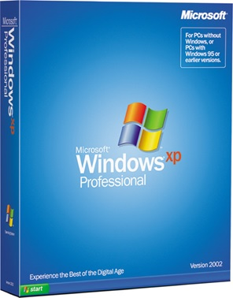
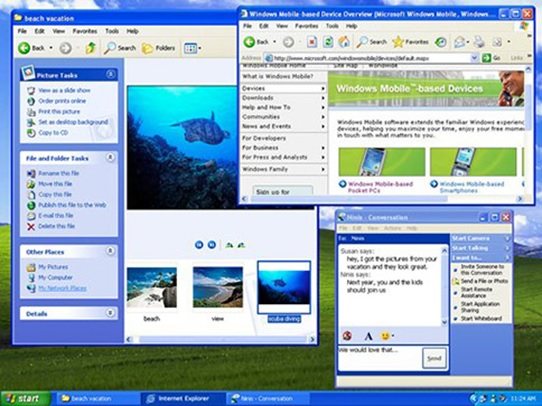

Pada tanggal 25 Oktober 2001, Windows XP dirilis dengan tampilan didesain ulang dan merasa yang berpusat pada kegunaan dan terpadu Bantuan dan Dukungan layanan pusat. Ini tersedia dalam 25 bahasa. Dari pertengahan 1970-an sampai peluncuran Windows XP, sekitar 1 miliar PC telah dipasarkan di seluruh dunia. Untuk Microsoft, Windows XP akan menjadi salah satu produk yang paling laris di tahun-tahun mendatang ini baik, cepat dan stabil. Menjelajahi menu Start, taskbar, dan Control Panel yang lebih intuitif. Kesadaran terhadap virus komputer dan hacker meningkat, tapi ketakutan hanya sampai batas tertentu ditenangkan oleh pengiriman online update keamanan. Konsumen mulai mengerti peringatan tentang lampiran yang mencurigakan dan virus. Lebih menekankan pada Bantuan dan Dukungan.
Windows XP Home Edition menawarkan desain yang bersih, sederhana visual yang membuat fitur yang sering digunakan lebih mudah diakses. Dirancang untuk digunakan di rumah, Windows XP menawarkan perangkat tambahan seperti Network Setup Wizard, Windows Media Player, Windows Movie Maker, dan ditingkatkan kemampuan foto digital. Windows XP Professional membawa dasar yang kuat dari Windows 2000 ke desktop PC, meningkatkan kehandalan, keamanan, dan kinerja. Dengan desain visual yang segar, Windows XP Professional mencakup fitur-fitur untuk bisnis dan rumah komputasi canggih, termasuk dukungan remote desktop, sebuah sistem file enkripsi, dan mengembalikan sistem dan fitur jaringan canggih. perangkat tambahan kunci untuk pengguna ponsel termasuk dukungan 802.1x wireless networking, Windows Messenger, dan Remote Assistance.

Windows XP memiliki beberapa edisi selama tahun ini: